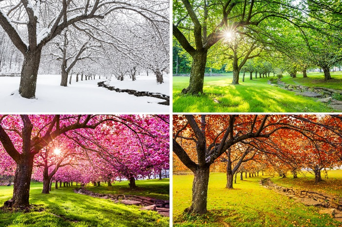

Durante o ano temos 4 estações: primavera, verão, outono e inverno.
Essas estações ocorrem devido á inclinação do eixo da Terra e o movimento de translação que é o movimento realizado pela Terra no período de um ano em torno do Sol.
O outono começa dia 21 de março e vai até o dia 21 de junho. No outono os dias ficam mais curtos e mais frescos. As folhas começam a cair e as frutas já estão maduras.
O inverno começa dia 21 de junho e vai até o dia 23 de setembro. No inverno além de ser mais frio os dias também ficam mais curtos, e devido ser muito frio em muitos lugares nevam.
A primavera começa dia 23 de setembro e termina no dia 21 de dezembro, com o término do inverno os dias ficam mais quentes e longos, além de, muitas flores que deixam essa estação incrível.
O verão vai do dia 21 de dezembro à 21 de março, além de ser a estação mais quente os dias são bem longos. E com o calor e a chegada das férias é bom para viajar e curtir o lindo e belo verão.
